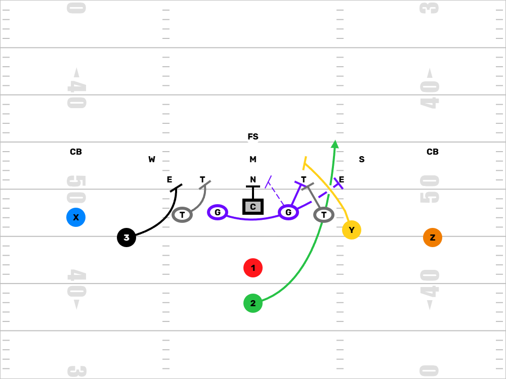
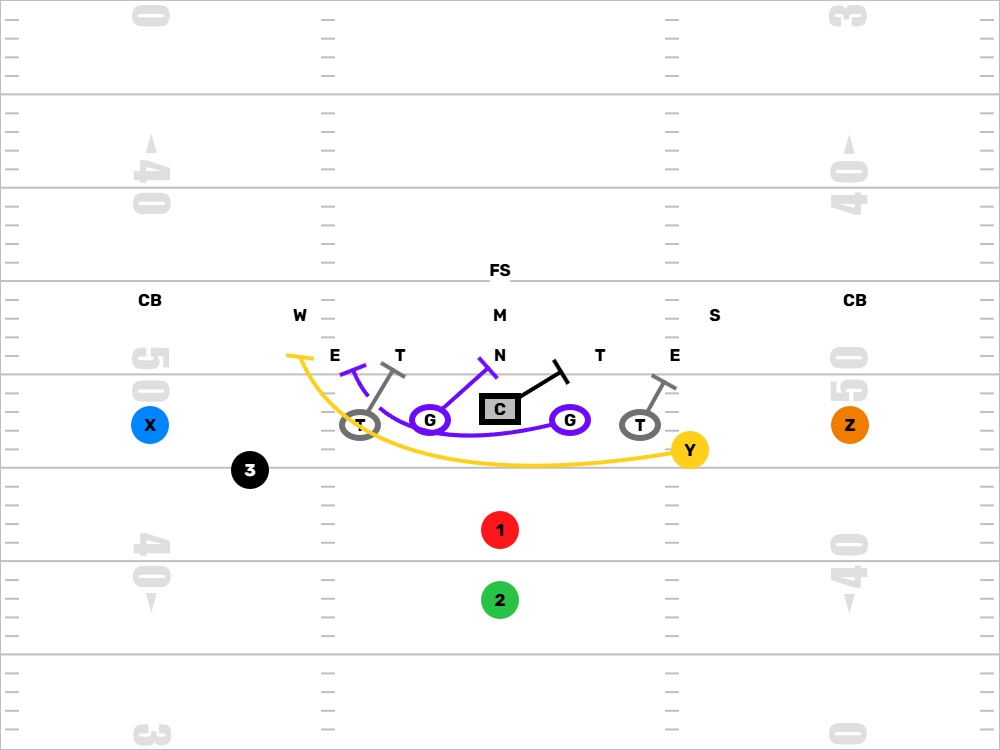
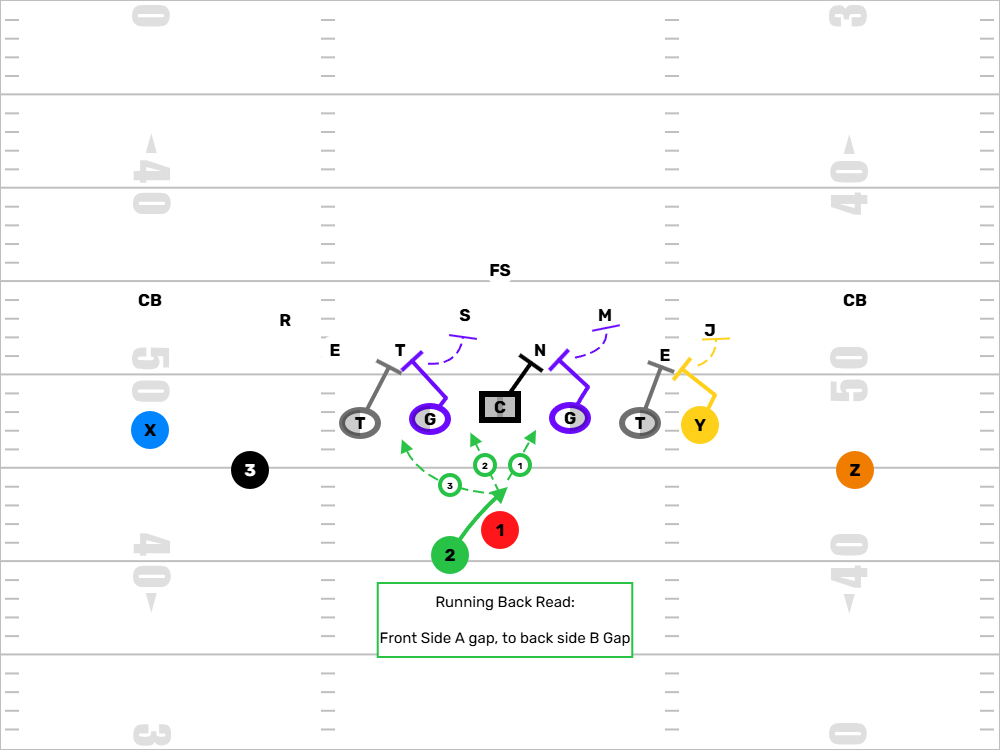
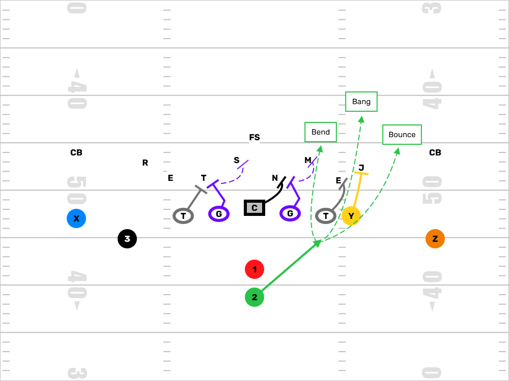
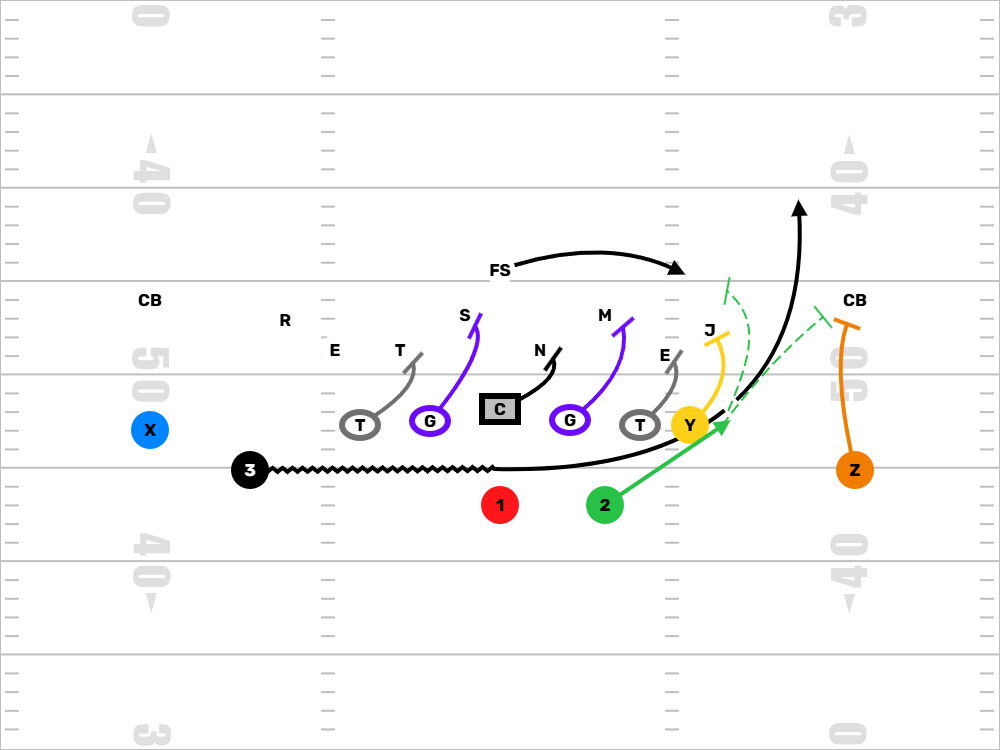

Run Concepts
Author: Coach Kyle | Created: June 20, 2025
Key Run Concepts
For the offense, everything starts with the run game—and it comes down to two families of schemes: Zone and Gap. Each has its strengths, weaknesses, and teaching points, and each can work at the youth level with the right coaching approach.
Gap Run Concepts
Gap schemes (like Power and Counter) are about angles, double teams, and pulling linemen. Block defenders, not areas, using down blocks and kickouts to open clear, physical running lanes. It’s a hit-you-in-the-mouth style of football.
- Strengths: More direct. Teaches physicality, pad level, and how to create movement at the point of attack. Simple aiming points for the back.
- Challenges: Requires confident pulling linemen and good timing between the back and blockers.
- Recommended Age: 8U and up. Power is often the first run concept young teams install—it teaches attitude early and is easier to rep quickly.
Both systems can be foundational, and can often blend them. Zone helps the backs become more than just athletes—it teaches them to think, to read, to react. Gap teaches the line to be tough, to finish, and to create momentum. Keep the rules simple enough to execute fast and confidently.
Zone Run Concepts
Zone schemes are all about space, leverage, and reading defenders. Instead of blocking specific defenders, we teach our offensive linemen to block areas—or "zones"—working together to climb to the second level. Our backs read the defense and make one cut to get vertical.
- Strengths: Teaches teamwork, leverage, and vision. Great for teaching linemen to move in unison and for developing patient running backs.
- Challenges: Requires repetition and timing. Linemen must understand combo blocks and how to adjust on the move.
- Recommended Age: 10U and up, but simplified versions can work for younger age groups with clear rules and reps.

Power
Overview: Power is about imposing your will. It’s gap-scheme football—down blocks and a puller creating a physical running lane. It’s an attitude play. You’re saying, “We’re coming right at you. Stop us.”
How It Works: The offensive line down blocks to collapse the interior, and a backside guard (or tackle) pulls to lead through the hole. The fullback or tight end may also kick out the end man on the line of scrimmage. The RB hits the B-gap hard, following the puller like a freight train.
Running Back Read: Be decisive. Trust the puller and hug his inside hip. If the hole’s there, hit it full speed. If the defense spills, cut underneath the kick-out block. Don’t hesitate—power is about timing and momentum.
Why We Use It: Power builds toughness. It’s great for short-yardage, red zone, or when you need to send a message. For youth players, it teaches pad level, double teams, and how to pull and kick out. It’s the core of every great run game.

Counter
Overview: Counter is the perfect complement to Power or Zone. It hits the opposite direction of flow. You show the defense one thing, then come back with misdirection—pullers, backfield action, and backside punch.
How It Works: The back takes a jab step away from the play, then cuts back across to follow the guard and tight end pulling to the play side. The offensive line blocks down opposite the direction of the run, creating strong angles. One blocker kicks out, the other leads up through the hole.
Running Back Read: Sell the first step like it’s zone or sweep. Then take the ball, stay tight to your pullers, and look for the hole opening behind the down blocks. If the defense over-pursues, you’ve got daylight. Eyes up, hips low, and trust your convoy.
Why We Use It: It punishes aggressive defenses. At the youth level, Counter slows defenders down and creates huge cutback lanes. It also teaches eye discipline and footwork. When your line gets comfortable pulling, Counter becomes a chunk-play machine.

Inside Zone
Overview: Inside Zone is the foundation of our run game. It’s a physical downhill scheme that gives the running back multiple options based on how the defense reacts. The goal is to create vertical seams and get north quickly.
How It Works: The offensive line works in unison, stepping play side and blocking zones rather than specific defenders. Each lineman is responsible for an area, not a man. If there's no one in their zone, they help double to the next level. The running back aligns in shotgun or under center and reads the first defensive lineman play side (called the "read key"). The back has three choices: bang it inside, bounce it outside, or bend it backside.
Running Back Read: We teach our backs to be decisive. Read the play-side A-gap. If it's clean, hit it. If it’s cloudy, bounce to the next gap. If the defense overflows, bend it back. No dancing—one cut and go. The cut doesn’t have to be perfect; just be confident and get vertical.
Why We Use It: It works against every front and teaches our offensive line how to play together. It gives our backs the freedom to be playmakers while keeping the rules simple up front. At the youth level, it’s a great way to teach footwork, pad level, and physicality without getting too complicated. It’s a scheme you can run for years and just keep getting better at.

Wide Zone
Overview: Wide Zone is the heartbeat of our offense. It’s Outside Zone with a wider aiming point and a stronger commitment to attacking the edge. It sets up play-action, bootlegs, and makes defenders chase the ball across the field.
How It Works: Everyone moves together—like a train. Linemen work their tracks, trying to reach or drive defenders wide. The running back aligns deeper and aims for a landmark near the numbers. The RB presses that path hard, then makes a single cut based on leverage and pursuit.
Running Back Read: Read the edge—typically the play-side DE or OLB. If he’s sealed inside, bounce it. If he’s outside or wide, look for vertical seams between the tackle and guard. If everyone flows hard, bend it back. One cut, get downhill.
Why We Use It: It makes the defense cover the entire field. Even when it doesn’t hit big, it wears down defenders. At the youth level, it’s about discipline—get everyone moving the same direction and backs running with purpose. When it clicks, Wide Zone opens up your whole playbook.

Outside Zone
Overview: Outside Zone stretches the defense horizontally. It forces every defender to move laterally, creating natural cutback lanes for the running back. It’s all about discipline, leverage, and vision.
How It Works: The offensive line takes a play-side reach step, trying to overtake the defender in their zone or push them wide. The running back aims for an outside landmark—usually the butt of the tight end—and reads inside out. He presses the edge, then plants and cuts upfield or back based on the defense's reaction.
Running Back Read: We teach: “stretch, press, then decide.” Press the aiming point hard, force defenders to flow, then make one cut and get vertical. The read is typically first down lineman outside the play-side guard. Cut up if he gets reached, bounce if the edge seals, or bend back if the backside opens.
Why We Use It: It teaches discipline and consistency—especially for the O-line. For backs, it rewards patience and vision. At the youth level, it gets the defense running sideways, which opens up huge cutback lanes. And once you get good at it, everything else builds off it.